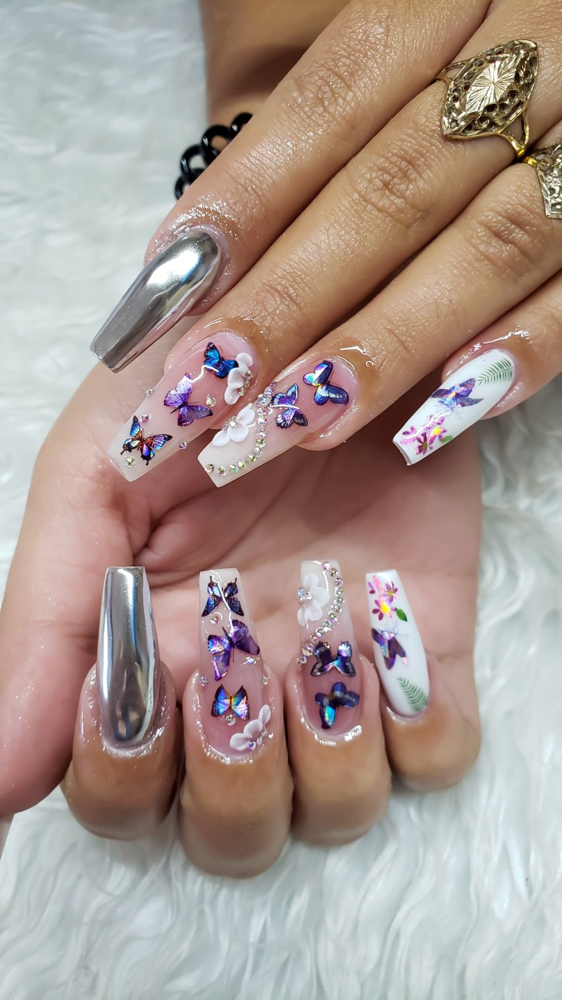

UÑAS ACRILICAS
Las uñas acrílicas, también conocidas como las uñas de porcelana, son extensiones de la uña a partir del acrílico. Un termoplástico rígido excepcionalmente transparente e incoloro, que puede pigmentarse para obtener infinidad de colores. También puedes dejarlo sin pigmento para producir una lámina completamente transparente.
UÑAS EN GEL
Las uñas esculpidas en gel son otra alternativa para lucir una manicura siempre linda; relativamente nuevas en el mercado. Estas se realizan con un gel, poligel o gel de fibra de vidrio; material que se seca bajo una lámpara UV o LED. Este tipo de uñas acrílicas son tan fuertes como las de porcelana, pero ofrecen un aspecto más natural.
UÑAS EN SNS
Existe un nuevo método de uñas o SNS que consiste en la inmersión de las uñas en un esmalte en polvo. También conocido como la técnica DIPPING y entre sus ventajas está, que ofrece una manicura sin productos químicos agresivos y sin la necesidad de emplear lámparas de secado. Por el lado de la duración no tiene nada que envidiar a las uñas acrílicas o de gel, pues permanecen en perfecto estado hasta por tres semanas.
UÑAS ESCULPIDAS
Las uñas esculpidas son una opción perfecta para aquellas mujeres que desean tener una manicura perfecta y duradera. Conoce algunos diseños de uñas acrílicas que puedes aprender a hacer. Con en este tipo de uñas acrílicas, es posible tener una “uña natural” puesto que está hecha con gel de fibra de vidrio o material acrílico de modo que alarga y esculpe las uñas con la apariencia deseada. Permiten restaurar y reconstruir uñas mordidas o simplemente lucir uñas más largas, estas deben “rellenarse” con regularidad para mantener su aspecto “natural” y durar más.
UÑAS DE SEDA
Las uñas de seda son envolturas de tela que se pegan en su lugar para fortalecer las uñas débiles y evitar que crezcan agrietadas. Algunas envolturas están hechas de seda, otras de lino y otras de papel o fibra de vidrio. La manicurista podrá ajustar el material a la forma de tu uña, la mantendrá en su lugar y luego aplicará pegamento. Este tipo de uña postiza está diseñada para ser temporal, por lo que los adhesivos se aflojarán de dos a tres semanas, o antes si no las proteges.
UÑAS BALLERINA
Las uñas en acabado ballerina es un estilo muy lindo y cómodo hecho en acrílico, se caracteriza por tener una terminación cuadrada y ligeramente puntiaguda. Para realizar este estilo de uña esculpida puedes elegir diferentes colores o el polvo acrílico preferido por la clienta. La diferencia con el acrílico convencional está en la forma que le darás a la técnica del limado; ya que la estructura de la punta va completamente recta y los lados en forma de V.
UÑAS DE PORCELANA
Las uñas de porcelana son hechas a partir de fibra de vidrio y su fabricación es similar a las acrílicas, sin embargo, su única diferencia radica es el material en el que se elaboran. Para realizarlas deberás seguir las mismas instrucciones que con las uñas de acrílico.
UÑAS DIP POWER
Este tipo de uñas se realiza con un polvo de inmersión y se pueden aplicar rápidamente. En este caso, en lugar de una laca, el color proviene de un polvo pigmentado. Entre las capas de base y un sellador deberás sumergir las uñas de tu clienta en el color que elijas; y fácilmente el polvo se adherirá al sellador. Esta es una buena opción en comparación con el gel y el acrílico, si se busca comodidad y una duración de tres a cuatro semanas. Al retirar ten procura dejar el tiempo y la acetona suficiente para facilitar el proceso.
UÑAS SOLARES
Este tipo de uñas están hechas de acrílico con un aspecto de manicura francesa, ya que están decoradas con una línea blanca en la punta. Es una alternativa excelente si tu clienta quiere que le duren alrededor de tres semanas.
